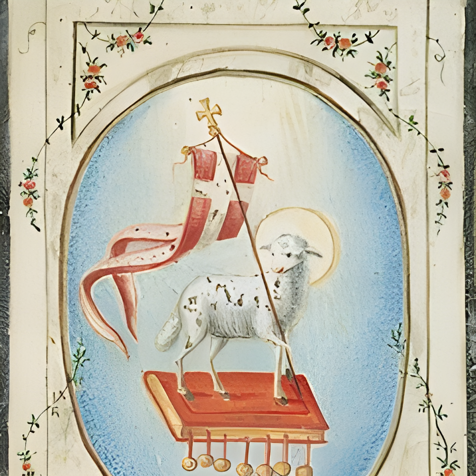
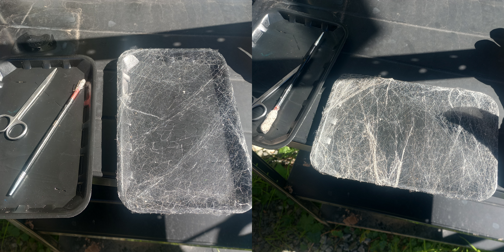
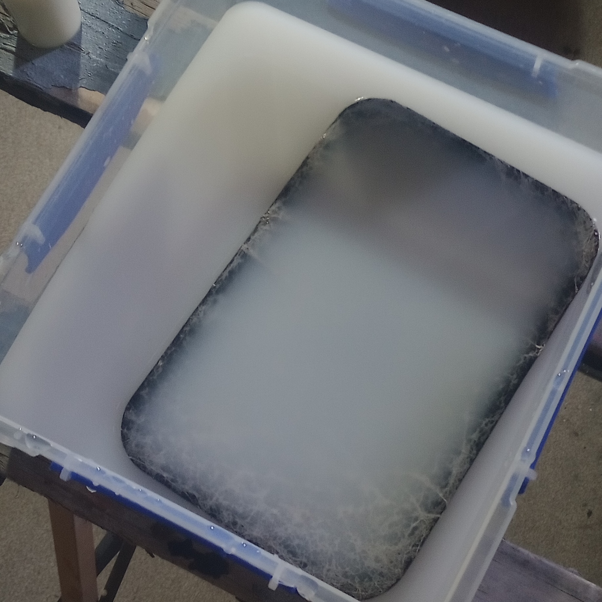
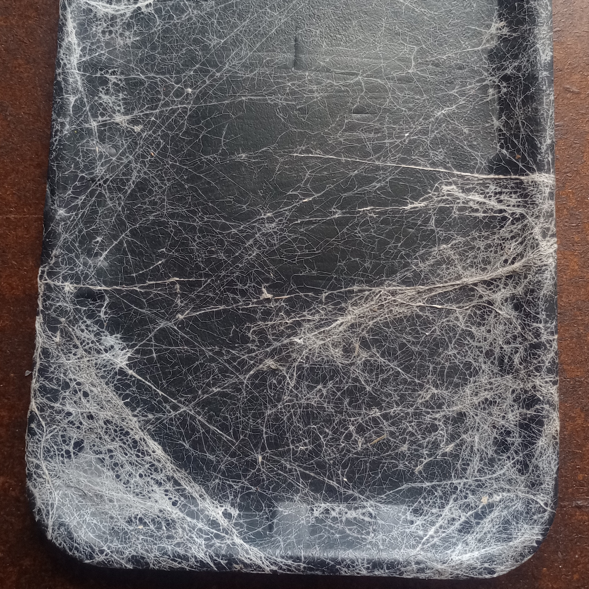
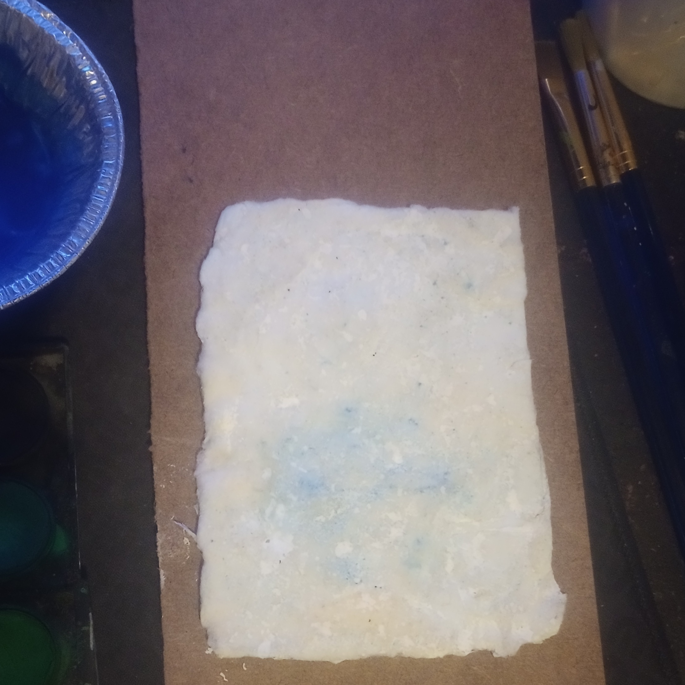
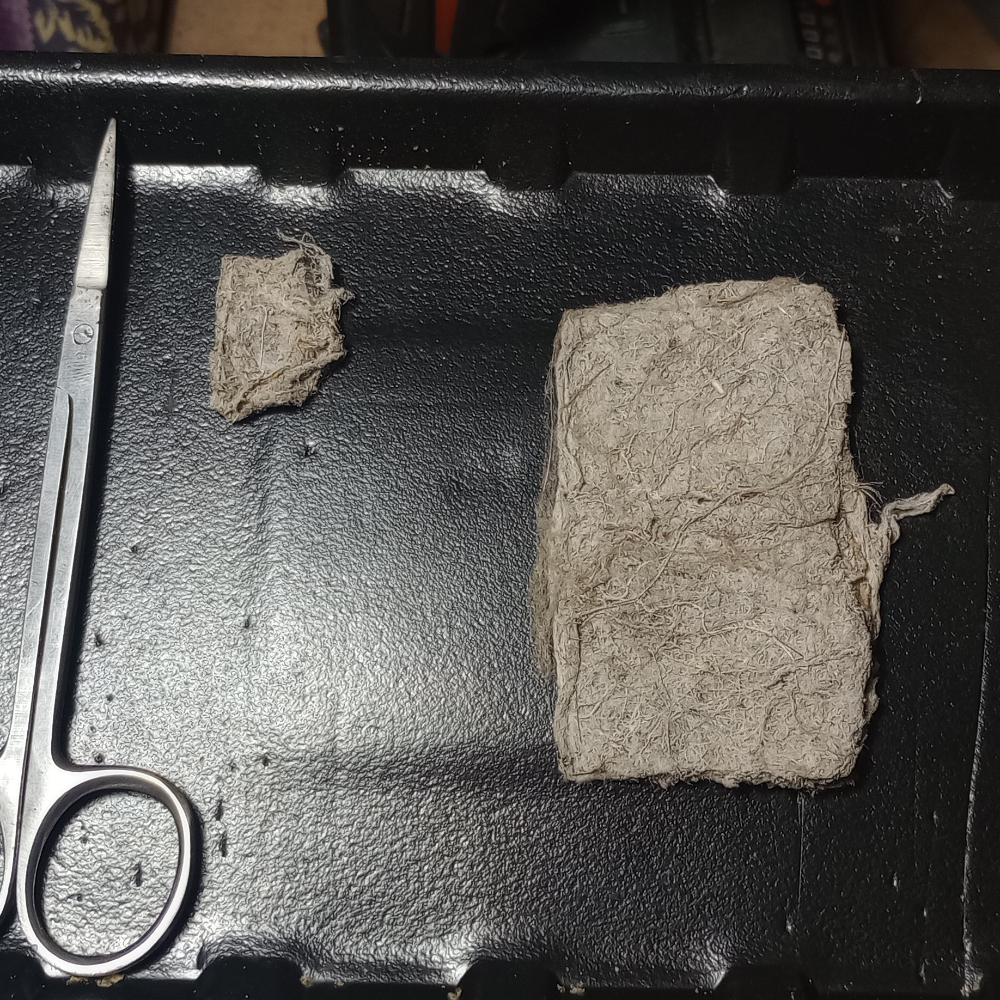
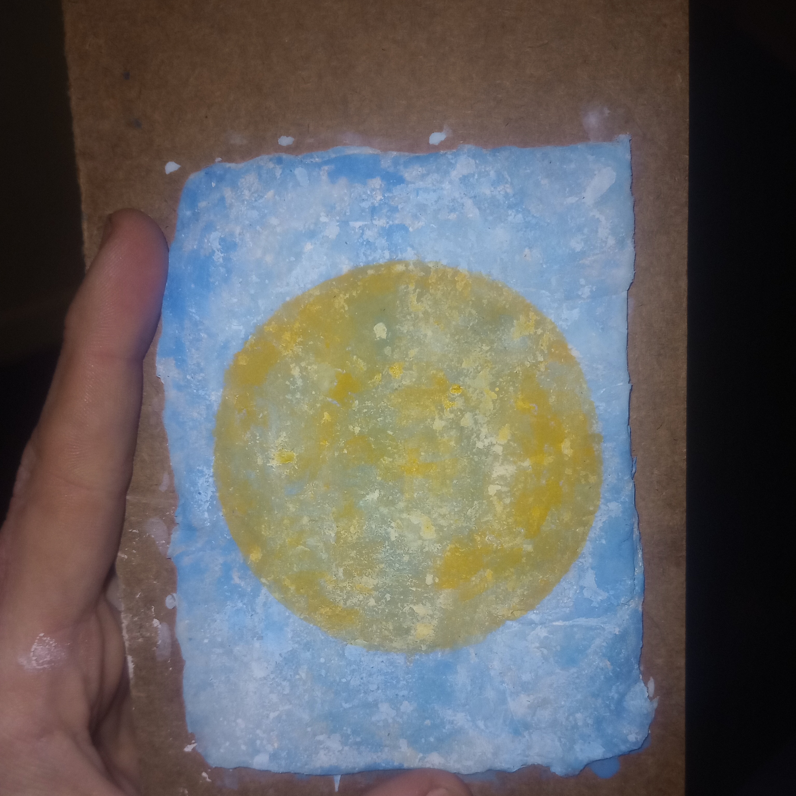
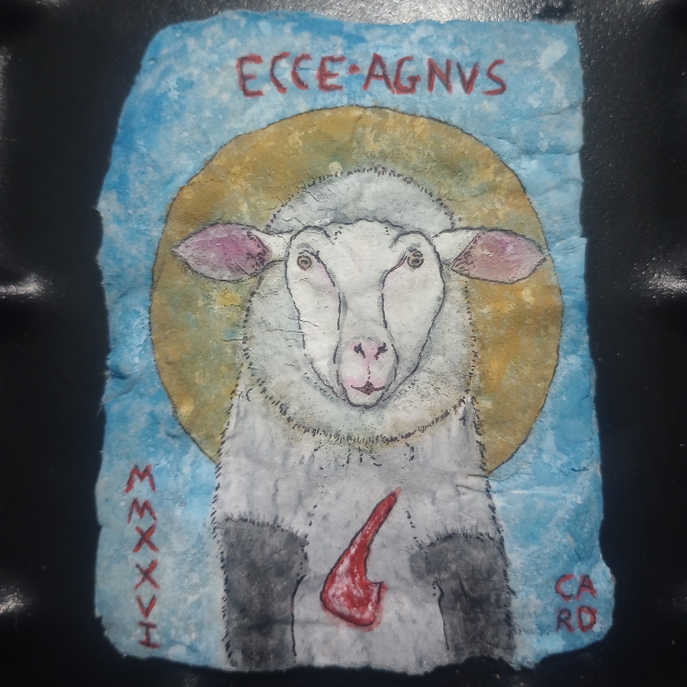
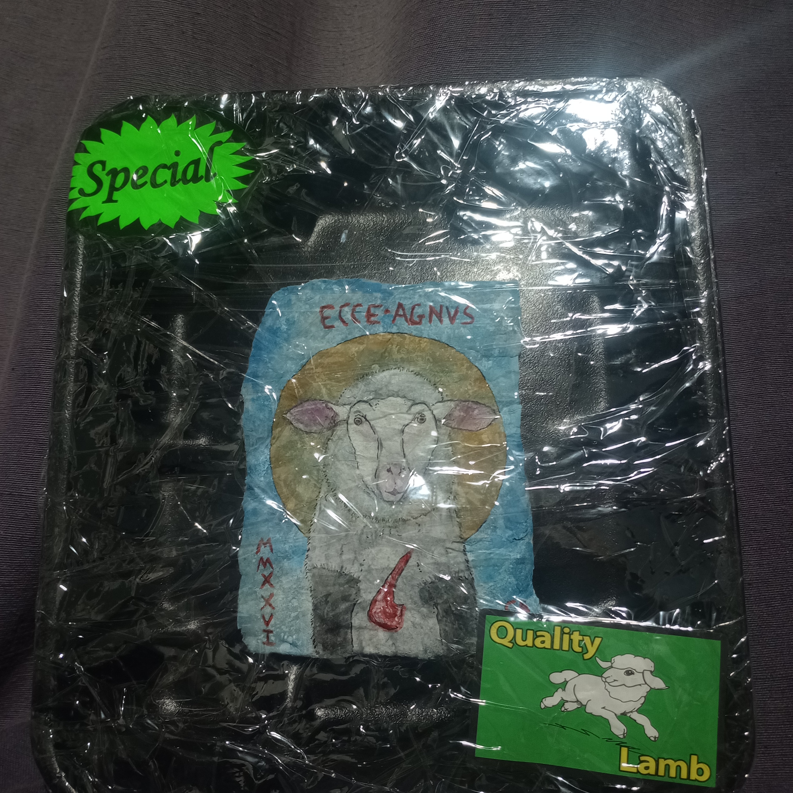
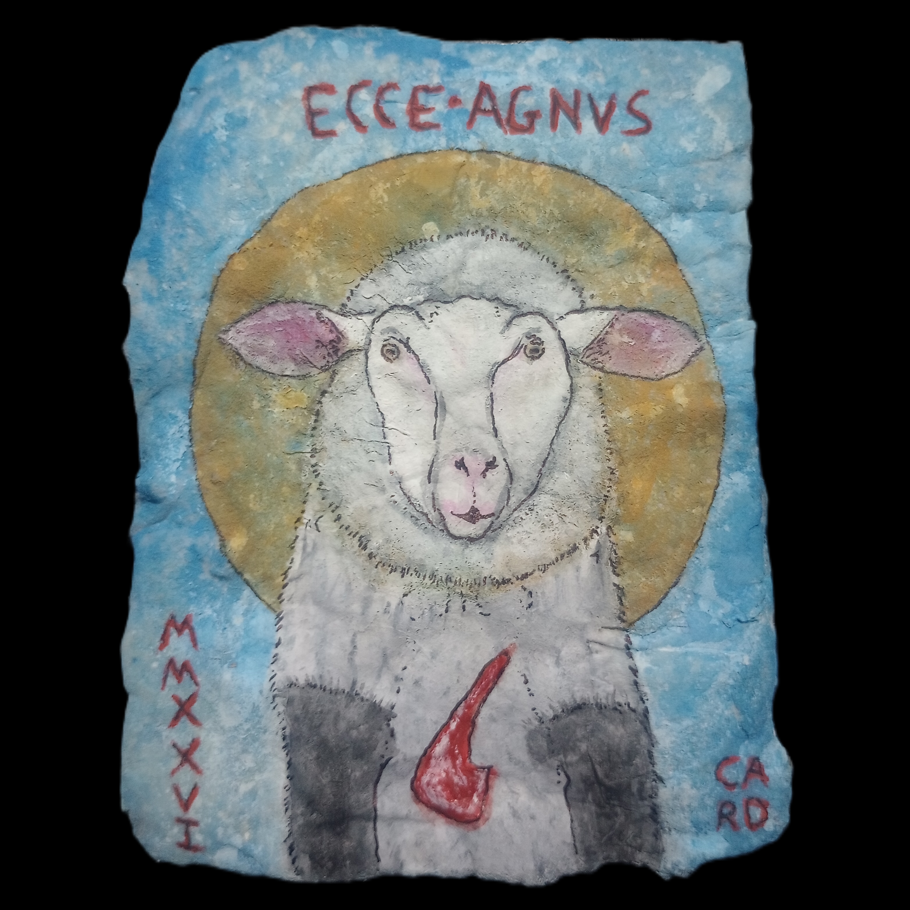

In the late Middle Ages, a handful of artists experimented with painting onto canvases made of spiders' webs.
By all accounts, it was a very arduous process. Most of these paintings were very small, and featured religious iconography befitting an undertaking of such effort.
Reportedly, fewer than one-hundred of these paintings survive today.

Agnus dei cobweb painting, Johann Burgmann, c. 1790
I decided to give this a go myself. I love novel art techniques, and I think one of the best ways to more thoroughly understand a process is to replicate it.
Over several weeks, I began collecting spiders' webs.
Using several small foam trays as frames, I would cut individual webs down, clean them of any debris, and begin carefully layering them onto one another.

Following period instructions, I then gently soaked my cleaned webs in a dilute milk solution.

The milk treatment denatures the webs. They lose a lot of their stickiness, and swell slightly. After drying, they now feel a lot more fibrous.

Once treated, the denatured webs can be gently stretched out, and then layered together and folded repeatedly onto themselves to make a theoretically workable surface.
After a few abortive first attempts, I still had enough webs to make one small canvas.

Over several days, I had to repeatedly and very delicately rinse, dry, comb, and press my canvas flat to prepare it as a painting surface.
But I did eventually get it to a point where I felt it would be ready to try to work with.

It does eventually take a watercolour pigment, with repeated applications. I was using a fairly watery paint, a very fine soft brush, and was giving the canvas time to fully dry in between applications. I feared stronger applications of a dry pigment or rushing the process would have meant the whole piece falling apart.

It felt extremely fragile as I was working on it, but I eventually layered enough watercolour pigment and india ink onto the canvas to make a sort of play on the agnus dei symbol.

This was without a doubt one of the most delicate mediums I've ever tried making something with. For safekeeping, I mounted this piece on cardstock and wrapped it up to shield it from dust and moisture.

I'd definitely like to revisit the concept at a larger scale in the future.

last major update: September 2026